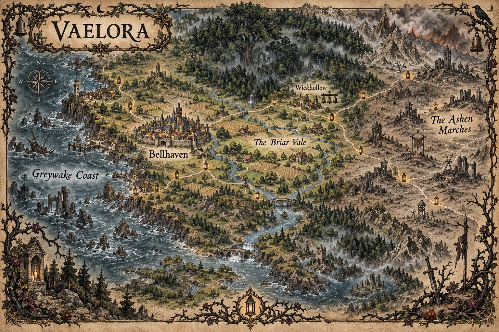

The gods are silent
Old vows retain their power, but no voice answers.
A dark fairy-tale campaign
The gods are silent.
The old promises are not.
Beyond the lantern road, an ancient magic remembers every name, every kindness, and every careless vow.
The campaign premise
Vaelora is a land of ancient roads, deep forests, isolated settlements, and traditions whose original meanings have been forgotten.
Its people survive beneath the light of iron lanterns and the protection of warding bells, rarely travelling beyond familiar paths after nightfall. Outside those protected routes lie ruined kingdoms, abandoned shrines, and wild places where the laws of ordinary life begin to bend.
Three centuries ago, the gods stopped answering. There was no divine war, final prophecy, or warning. One day, prayers simply ceased receiving answers. Temples remained standing and sacred traditions continued, but the voices behind them had vanished.
Faith did not disappear. Priests still maintain shrines, families observe holy days, and rare individuals perform miracles through sacred vows and ancient covenants. Nobody knows whether these powers come from sleeping gods, lingering fragments of divinity, or something else wearing familiar faces.
Old magic, older prices
The Wyrd is ancient magic woven through Vaelora’s forests, ruins, bloodlines, names, and promises. It can heal impossible wounds, reveal hidden paths, transform living creatures, or grant desperate wishes.
It can also twist careless words into binding agreements and turn harmless gifts into lifelong debts. Magic is rare enough to inspire fear, but common enough that every village has stories about it.
Old vows retain their power, but no voice answers.
Names, gifts, bargains, and hospitality have power.
The Wyrd is rare, mistrusted, and never without consequence.
Iron, salt, fire, and bells keep old darkness at bay.
Forests shift, old wrongs return, and ruins do not stay buried.
Where the story begins
A secluded village within the Briar Vale, guarded for generations by six ancient iron bells. No surviving record explains who placed them around the boundary, but the people of Wickhollow know better than to question a protection that works.
Recently, a seventh bell appeared.
It bears unfamiliar markings. Nobody admits to hanging it, and nobody remembers seeing it arrive. Some villagers insist it rings after midnight, although its clapper never moves.
Each time the sound is heard, something seems subtly different. A path leads somewhere new. An old memory no longer matches. A familiar face behaves like a stranger.
Iron, salt, and the hour of the bell
Across Vaelora, people use small rituals to mark the boundary between safety and danger. Some are religious, some practical, some village superstition, and some are old protections whose original meaning has been forgotten.
City scholars dismiss village habits as rural fear. Young people roll their eyes before obeying anyway. Travellers collect local superstitions the way others collect maps, because every town insists its version is the correct one.
In one village, bells are rung to drive the Wyrd away. In the next, bells are rung to warn the Wyrd that mortals are passing respectfully through its territory. Both will insist the other has misunderstood the old ways.
Breaking a custom does not always cause disaster. Sometimes nothing happens at all.
Sometimes that is worse, because people remember the one time something did.
These traditions are not meant to trap characters into constant caution. They are the texture of Vaelora: habits, warnings, and little gestures that make the world feel old, lived-in, and slightly watchful.
What everyone believes they know
Some of this is fact. Some is tradition. Some is a story repeated so often that few people remember where it began.
Three centuries without a clear answer. Temples still stand and priests still serve. Divine magic exists, but its source remains debated.
It has something to do with old magic, strange places, names, promises, gifts, curses, and bargains. Treating it lightly is foolish.
A path that looks familiar by daylight may lead somewhere else beneath moonlight. Stay on the lantern roads wherever possible.
Village, temple, boundary, funeral, and warning bells are treated with respect. Even sceptics grow quiet when a bell rings at the wrong hour.
Common protections. Their effectiveness varies by story and region, but few people mock them loudly while standing near the woods.
A nickname is safer than a full name when dealing with strangers, spirits, witches, old things, or anything found alone in the wild.
To offer shelter, food, or protection is not a small thing. To betray it once accepted is shameful at best and dangerous at worst.
Abandoned temples, fallen keeps, sealed wells, drowned roads, and forgotten battlefields may hold treasure, history, curses, or things left deliberately.
A healer welcomed in one village is feared in the next. A spell can save a life and still leave witnesses whispering.
A farmer may not know a creature’s proper name, but may know which road it haunts, what sound it makes before rain, and what offering their grandmother left out.
The recent appearance of a seventh is not normal. Even those who pretend otherwise understand that something about it is wrong.
Ask the Dungeon Master what you might reasonably know
Fragments of forbidden theology, old royal histories, and the arguments over what truly caused the Great Hush.
Sacred rites, saints’ names, relic traditions, and which prayers are still spoken though the gods no longer answer.
How to read forest signs, which paths are safe after rain, what birdsong means danger, and which old trees people avoid.
Healing plants, poisonous berries, folk cures, and the difference between a useful superstition and a very bad idea.
Sea omens, storm customs, drowned ruins, smuggling routes, and stories about bells ringing beneath the water.
Monster tracks, battlefield ghosts, refugee roads, and the price of ignoring warnings.
A wizard may know arcane theory but misunderstand old bargains. A cleric may understand holy rites but fear the Wyrd. Knowledge in Vaelora is rarely perfect: facts, superstition, family warnings, temple doctrine, and half-remembered songs often sit beside each other.
Sometimes the useful question is not “Is this story true?” Sometimes it is “Why did people keep telling it?”
Choose where you came from
Every safe place has a boundary. Every boundary has something waiting beyond it.
The walled city
A fortified city of guilds, crowded markets, grand temples, and strict laws against witchcraft.
The starting region
Farming villages beneath an ancient forest. Its people are practical, communal, and deeply superstitious.
The drowned shore
Storm-beaten fishing settlements built among drowned ruins. Bells ring beneath the sea before disaster.
The scarred frontier
Abandoned keeps, monster hunters, refugees, and forgotten battlefields. Survival matters more than pedigree.
Drawn from the accounts of travellers
This map shows places commonly known by travellers, merchants, priests, and storytellers. Hidden roads, forgotten ruins, and stranger places may be discovered during play.

Ancestry, culture, and the stories people tell
Humans are common in many regions, but they are not the only people who shape the world. Elves, dwarves, halflings, gnomes, orcs, tieflings, dragonborn, aasimar, and other ancestries all have places within Vaelora.
Large settlements, trade roads, coastal communities, and fortified cities are usually more diverse. Bellhaven holds families, guilds, temples, and neighbourhoods from many backgrounds, though its laws and traditions remain strict. The Greywake Coast sees sailors, traders, refugees, smugglers, and relic hunters from distant shores, so unusual faces surprise nobody there.
Smaller villages have less experience with unfamiliar appearances, languages, or customs. In the Briar Vale, people are practical, cautious, and superstitious, and may judge outsiders by old stories before they know them properly. Horns, unusual eyes, strange markings, or obvious magical signs might attract whispers, curiosity, fear, fascination — or requests for help.
Some communities believe horns mean old forest blood, silver eyes mean the Wyrd has noticed you, or that long-lived peoples carry memories humans were meant to forget. These beliefs may shape how people react, but they do not define what a character is.
Difference alone does not make someone monstrous.
People are remembered by what they do, what they protect, what they break, and what promises they keep.
Living with difference
Your character may stand apart because of ancestry, magic, faith, homeland, appearance, profession, reputation, family history, or a connection to the Wyrd.
Difference does not need to mean rejection. Some characters come from families, villages, temples, guilds, or travelling groups where they were fully accepted. Others grew up misunderstood, feared, protected too tightly, treated as useful, or expected to become something they never chose.
A character who has been feared can still become gentle. A character raised in comfort can still become cruel. A character marked by the Wyrd can still choose which promises they keep.
Living with difference creates tension, but it also creates connection. Someone who recognises your language, custom, scar, prayer, or superstition may become an ally. A place that first seems hostile may become home through choices made at the table.
Vaelora remembers names, promises, and stories. Your character decides which story they are willing to become.
Optional prompts
You do not need to answer all of them. Choose the ones that make your character feel more alive.
These are not tests. They are hooks the Dungeon Master can use, relationships the party can discover, and moments where your character’s place in Vaelora matters.
Five ways power reaches the world
Most people use the word Wyrd for any power they cannot explain. A farmer may see little difference between a wizard’s spell, a cleric’s miracle, a druid’s transformation, or a forest creature’s curse. Scholars recognise distinctions; ordinary people judge magic by its effects and the intentions of whoever wields it.
Learned
Wizards, bards, artificers, and other learned practitioners find magic through rare tutors, inherited texts, hidden schools, or dangerous experimentation. Arcane knowledge is valuable and closely guarded.
A spellbook might be a scholarly treasure, a forbidden object, a family inheritance, or evidence of witchcraft.
Inherited
Sorcerers and others born with power may carry unusual bloodlines, unexplained marks, recurring dreams, or ties to events their families refuse to discuss.
Innate power does not automatically mean someone is cursed or evil. It may be a gift, a burden, a mystery, or a sacred responsibility.
Covenant
The gods have not spoken clearly since the Great Hush, but sacred power remains. Clerics and paladins draw magic from ancient covenants, holy relics, inherited traditions, or vows upheld with absolute conviction.
Their power works, but no divine voice confirms its source. You may believe your god still listens — or fear that something else is answering.
Land and season
Druids, rangers, and others bound to nature draw power from the land, living creatures, seasonal cycles, or ancient spirits. This magic is often respected in rural communities and feared in cities.
Vaelora’s wilderness is beautiful and powerful. Nature is not always benevolent.
Terms and consequences
Warlocks and others bound by agreements should remember that promises carry real weight in Vaelora. A pact may be willing, inherited, accidental, or accepted in desperation. Patrons need not be openly malicious, but every agreement has terms.
The Wyrd remembers what was promised, even when the person who made the promise does not.
A spell used to save a life may earn gratitude and still leave witnesses uneasy. Reactions vary between people and communities; magical characters will not face immediate violence whenever they reveal their abilities.
Non-magical characters matter just as much. Courage, skill, loyalty, knowledge, and common sense can carry a night as surely as any spell.
Beautiful first, unsettling second
Warm inns, village festivals, eccentric travellers, friendship, humour, and moments of wonder stand beside haunted roads, cruel transformations, forgotten ruins, and creatures that obey unfamiliar rules.
Your place in the story
You do not need to be a chosen hero. You need a reason to care, a question you cannot ignore, and a reason to stand beside the others.
All standard classes and species are welcome. Magical characters are unusual, not forbidden.
Backstory builder
A home. Choose one region you call home.
A bond. Name a person or community you care about.
A shadow. Recall an unsettling encounter, rumour, or family secret.
A reason. Decide why you left safety behind.
A belief. Say what you think the Wyrd truly is.
A connection. Link your story to another party member.
Before the mechanics
Think about who your character is within Vaelora. Good starting questions:
Your character does not need to be fearless, noble, or perfectly heroic. They do need a reason to engage with the story and cooperate with the other characters.
Species and backgrounds
Standard species and backgrounds from the 2024 Player’s Handbook are available by default. Other official options, third-party material, and homebrew may be allowed with Dungeon Master approval.
Are you from a large city, a coastal settlement, a rural village, a travelling family, a temple, a guild, or somewhere stranger? A character who draws attention in Wickhollow may be entirely ordinary in Bellhaven or along the Greywake Coast.
You do not need an elaborate backstory. A clear origin, one meaningful relationship, and one reason to be in Wickhollow are enough to begin.
Classes and magic
All standard classes from the 2024 Player’s Handbook are available by default. Think about how your abilities are read by the people around you.
A fighter may be a village guard, caravan escort, monster hunter, disgraced soldier, duelist, mercenary, or someone who learned to survive because nobody else would protect them. A rogue may be a smuggler, scout, locksmith, spy, relic thief, gambler, courier, or a survivor of a place where quiet feet mattered.
Divine characters exist despite the Great Hush. Clerics and paladins still perform miracles, but no clear voice confirms where that power comes from. That uncertainty can become faith, doubt, confidence, or a private mystery.
Your class is not just a set of mechanics. It is a story about how your character learned to survive, what power they trust, and what they are willing to become.
Threads between you and the world
Every character needs a reason to be in or near Wickhollow, and a reason to stay with the party once the story begins.
I
A local, traveller, wanderer, or outsider. Consider the life they lived before the campaign began.
II
Choose at least one reason to be in or near the village when the story opens.
Perhaps Wickhollow is only a stop along your journey — though something may soon make leaving harder than expected.
III
Each character should have at least one connection to another player character. Close, casual, tense, or newly formed — as long as it gives you both a reason to interact.
Choose one person, place, or community your character genuinely cares about. It gives them something worth protecting and places them inside the world. Then consider:
Stories heard beside the fire
Stories travel quickly in Vaelora, especially when people insist they are not afraid. Some rumours are warnings. Some are lies. Some are true in the worst possible way. Choose one your character believes, doubts, fears, or wants to investigate — or invent your own with Dungeon Master approval.
A child once vanished into the Briar Vale and returned the next morning twenty years older.
One of Bellhaven’s sealed temples has begun producing fresh candle smoke.
A road appears beneath the full moon and leads travellers exactly where they ask, but never where they intended.
The bells beneath the Greywake Coast have started ringing more frequently.
In the Ashen Marches, a battlefield ghost still calls roll for soldiers who died centuries ago.
Never thank a stranger in the woods three times. Twice is polite. Three times is payment.
If a crow speaks your name at dawn, do not answer until sunset.
There is a village that appears on no map, but every lost traveller remembers passing through it.
Some old wells do not echo because something below is listening.
A merchant in red gloves can sell you anything you have lost, but never for coin.
If you sleep beneath a blackthorn tree, you may wake with someone else’s dream.
A saint’s relic in Bellhaven still bleeds on holy days, though the temple denies it.
Children in Wickhollow have started drawing seven bells instead of six.
Iron keeps some things away, but invites others closer.
The Wyrd cannot lie, but it has never needed to.
A promise spoken over running water can be heard downstream by things with patient ears.
Not every rumour is true. But in Vaelora, false stories can still lead you somewhere dangerous.
How we play together
Vaelora is a dark fairy-tale campaign, but the goal is not to make players miserable. The story may hold danger, curses, grief, fear, strange bargains, and unsettling magic. It should also hold warmth, humour, friendship, hope, and moments worth protecting.
Every character needs a reason to stay with the party and engage with the story. Avoid characters who constantly refuse to participate, abandon the group, sabotage other players, or make cooperation impossible.
Inter-character tension can be interesting when everyone involved is enjoying it. Player conflict is different. If a scene stops being fun, pause and talk about it.
The Dungeon Master has final authority over rules interpretations, homebrew, pacing, world details, and campaign boundaries. Ask questions, suggest ideas, and discuss character concepts early — final rulings belong to the DM.
If something is unclear during play, the DM may make a temporary ruling to keep the session moving and revisit it afterwards.
Sixty percent wonder, forty percent dread. Darkness should make the lanterns matter, not erase them completely.
Expect eerie mysteries, dangerous choices, and consequences — but also safe rooms, kind NPCs, ridiculous moments, found family, and chances to make things better.
Safety and boundaries
Because Vaelora uses dark fairy-tale themes, please share any content boundaries before the campaign begins. This can be done privately with the DM if you prefer. Topics worth flagging include:
Boundaries are not challenges. If a player says something is off-limits, it is respected.
Bring this to the first session
You do not need a perfect backstory. A few strong details are worth more than three pages of history nobody can use.
A useful starting sentence
“I am in Wickhollow because , and when the seventh bell rings, I stay because .”
If you can answer that, your character is ready to begin.
The road is waiting. Mind the lanterns, mind your promises, and listen carefully if the bells ring after midnight.
The story is waiting
No sessions have been recorded yet. Once the party steps beyond the lantern light, their discoveries, allies, and scars will be preserved here.